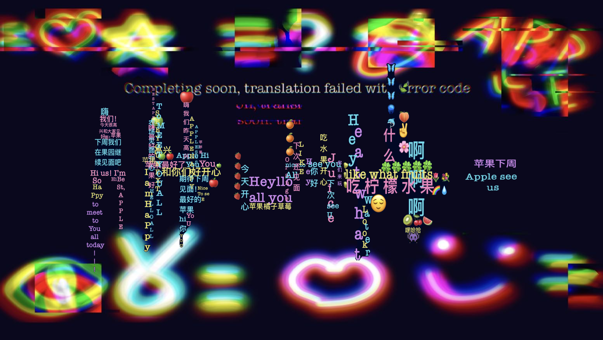

Interactive Website / 2024
Avery as System
A mouse-based interactive website exploring bilingual thought, translation error, and the relationship between language systems and data systems.

About the Project
Avery as System is an interactive website that visualizes transmission errors through language translation, missing meaning, and fragmented data.
The project connects my daily experience of switching between Chinese and English with the logic of digital systems. Language is a system, and data is also a system. As I move between them, meanings can shift, disappear, or become distorted.
I related this process to Gmail error codes I collected, which appeared as lengthy strings produced by moments of technical failure or interrupted transmission.
Tools: HTML, CSS, Procreate
Inside the Website
Through mouse-based interaction, glitch visuals, and concrete poetry, the website explores how I exist inside language and data systems — and how those systems shape the way I think, translate, and represent myself.
